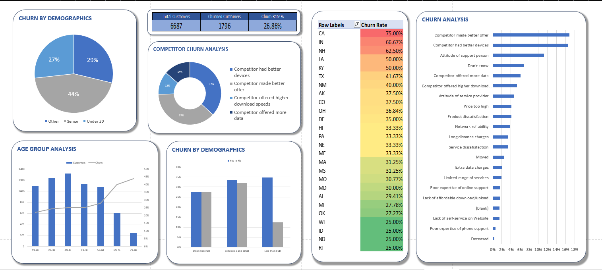

5+
Core tools
I help clients transform messy datasets into trustworthy analysis, practical business insight, and decisions supported by evidence rather than noise.
Core tools
Core services
Project focus
Positioning
Most data problems are not just about numbers. They are about inconsistency, ambiguity, and decisions being made without clarity.
I approach data the way a researcher approaches an experiment: clean the inputs, question assumptions, test patterns, and communicate only what the data truly supports.
About Me
I work with Python, SQL, Excel, Tableau, and BI tools to clean and structure data, perform exploratory analysis, automate repetitive reporting, and build dashboards that make insights clear instead of overwhelming.
My goal is not simply to deliver charts, spreadsheets, or surface-level metrics. I aim to produce analysis that explains what is happening, why it matters, and what should happen next.
I care deeply about precision, organization, and clear communication throughout the full analytical process.
I turn inconsistent, messy datasets into clean, reliable foundations that support accurate analysis and reporting.
I investigate patterns, anomalies, and drivers behind performance using a scientific, evidence-based workflow.
I design dashboards that are not crowded or decorative, but structured to help people understand what matters fast.
I automate repetitive analysis and reporting tasks so workflows become faster, cleaner, and more dependable.
Skills
My stack is built around practical analytics work: data cleaning, exploration, dashboarding, reporting, and insight communication.
Featured Project
An analytical dashboard designed to uncover why customers leave, identify high-risk segments, and support stronger retention decisions.

Project Overview
This project focuses on analyzing customer churn to understand the root causes of customer loss, identify the patterns associated with high churn, and convert those findings into business insights that improve retention.
The dashboard analyzes customer data from multiple perspectives, including demographics, age groups, data usage behavior, state-level churn patterns, and the most frequent reasons behind customer departure.
Experience
Digital Egypt Pioneers Initiative (DEPI) - MCIT Egypt
Worked with Excel, Python, SQL, Tableau, and Power BI in hands-on analytics training and business-oriented data tasks.
Built analytical workflows that supported dashboard creation, insight extraction, and decision-focused reporting.
Strengthened practical thinking around translating raw data into clear outcomes that clients and teams can understand.
Led parts of team coordination and communication to maintain structure, progress, and quality in collaborative work.
Education
Faculty of Science, Ain Shams University
Expected 2029Secondary Education
Graduated 2025Highlights
Contact
If you need someone who brings analytical discipline, structured thinking, and clarity to your data, I am ready to help.